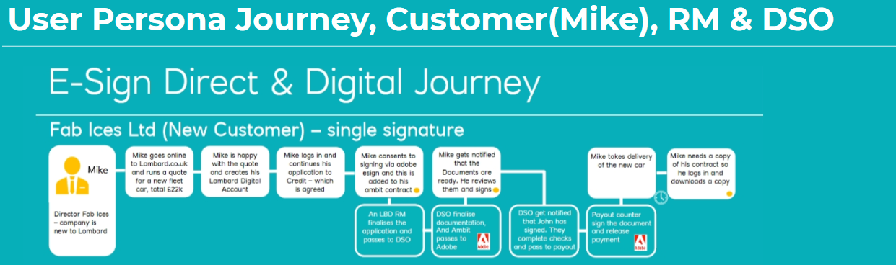
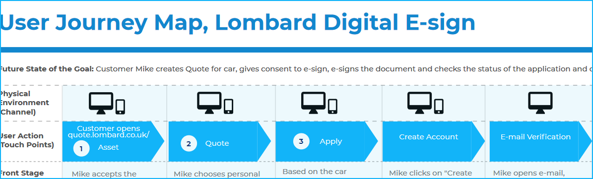
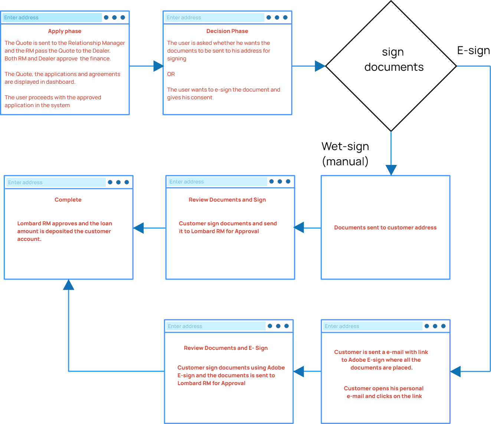

Project Name
Lombard Asset Management (E-sign)
Project Tagline
Include e-signing of documents digitally during the quote and financing for asset purchase workflow.
Project Summary
Customers or Business can get equipments like Vehicles, Agricultural, Marine, Technology, and others assets for Hire purchase for personal use or lease finance to grow their business from Lombard Asset Management. My role is to identify the problem and design a UX solution to include e-signing of documents digitally by customers during the quote and finance approval journey of the customer.Client Name
Lombard Digital
Timeframe
March to May 2022, Mphasis (Offsite)
My Major Tasks & Responsibilities
My task was to create the entire UX workflow for digital e-sign of documents during quote and financing approval journey by identifying the problems and create a working solution for the e-sign process.
Platforms
Web App (Responsive website)
Key Performance Metrics
No of people E-sign documents, Task completion Rate, User's Engagement with site.
Team Members & Collaborators
Business Analyst(SME's), Visual Designer, UI Developer, Client, Project Manager
Design Stage, Discovery Phase
The Problem to solve with this project is, to get the consent of the user, handle signing of single/multiple parties when financing for the asset is approved and encourage user to use Adobe E-sign tool to sign the documents.
GDPR Laws. Based on research, the compaines in UK that are using data of the users should follow the General Data Protection Regulation (GDPR) and security assurance that European people should be protected from online activity while doing any online transactions. The main challenge in this project,

- Getting consent from users before e-signing the documents. Without the customer consent, Lombard team(Relationship Manager) cannot send email, call, or SMS to the customers.
- Encourage user to use adobe e-sign to sign the documents for single signature or multiple party signature.
- Make the online users feel they are protected from any threats(online security) while sending or receiving the e-signed documents.
The current website allows the user to sign up using their e-mail address and phone number with Lombard digital UK but, there is no consent asked from the user when the quote or finance approval or any email is sent to them.
Design Stage, Define Phase
I created User Persona and a high level User Journey Map with each phases during the journey to understand the journey of the user, Relationship manager(RM), DSO(dealer) starting with Lombard quote application, Finance Approval, and E-signing of documents digitaly by the user. The problems, the steps and action the user takes during the journey was captured. The system response and feedback at each step was also captured.
 The result after creating the persona and user journey map,
- The whole team had a discussion on the user journey map during brainstorming session, the problems and the possible solution that can be built.
- Presented the ideas and the user journey map to the client to get a feedback on the solution that can be implemented.
- The onsite and offsite team had clear understanding about the problem to be solved and the tasks that has to be worked to achieve the result.
- Get the consent of the user for email, call and sms while signing up or before e-signing the documents in decision phase(wet-sign or E-sign).
- Encourage user to use Adobe E-sign and create awareness on security issues being addressed while e-signing the documents.
Design Stage, Prototype Phase
Before Starting the wireframing or prototyping,
- The interaction details of forms, form layout, placing labels to the left, right or top to the form fields was discussed with the team.
- Disabling and enabling the buttons. Distinguish the primary buttons and secondary buttons was taken care.
- The Existing style guide present with Lombard team was considered for form layout, colors and typography.
- Based on context the content was categorised and organised.
- The information Architecture was organised in form of wizard as the task was a process order(step-by-step).
Design Stage, Implementation and Test Phase

Learning from the project
Learnt Asset Management Domain knowledge, loans to customer in UK, types of purchase - hire purchase and lease finance. GDPR laws and the security issues that affect online activtiy specific to Europe.
The collaboration with client and the teamusing customer user journey along with brain storming sessions to find the problems and generating ideas from the team were helpful.
The challenges in the project, were to understand the Adobe E-sign integration with the UX workflow, Handling the Multiple signature flow and status updation of each process.
While the whole project was a huge learning experience, I especially loved iterating on designs and reviewing with the core team. This tight feedback loop helped take ambiguity out of the designs, and it felt good to produce designs with the confidence that match the user research insights.